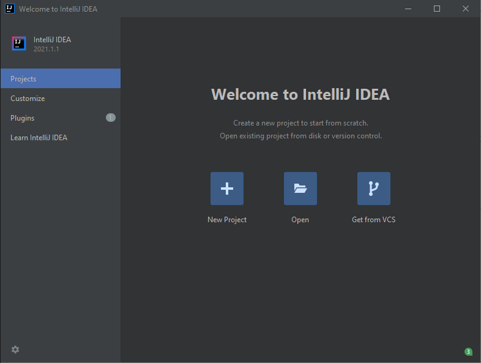
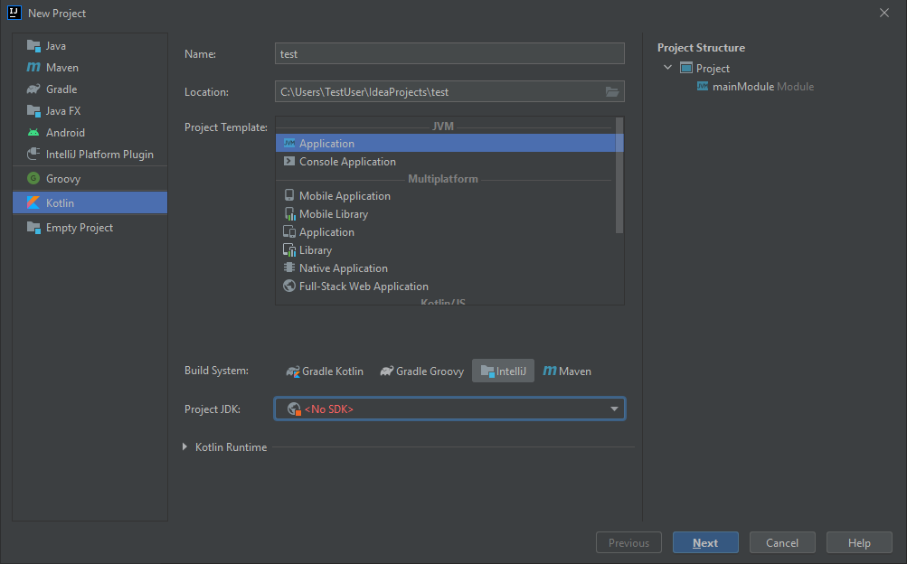
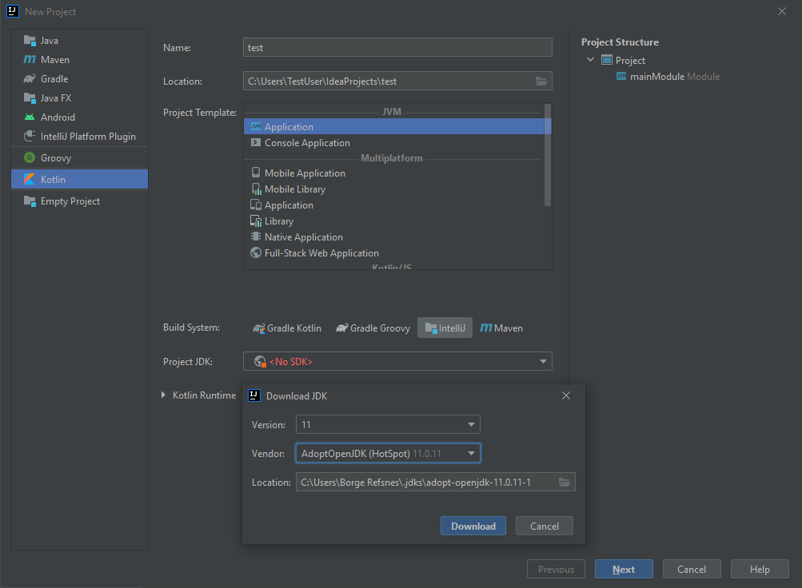
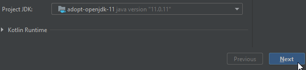
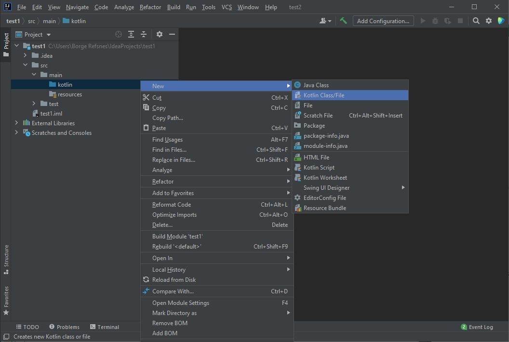
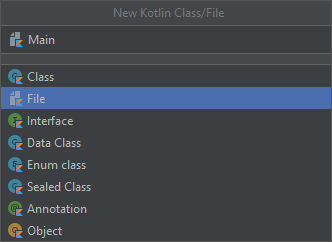
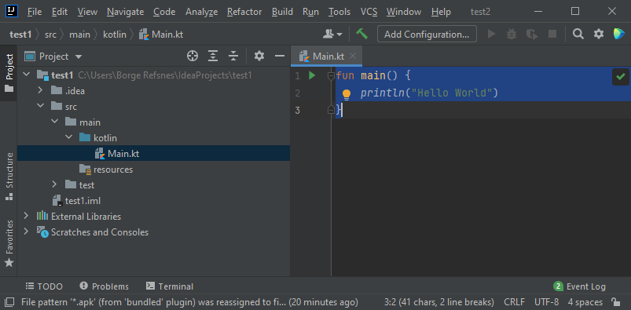
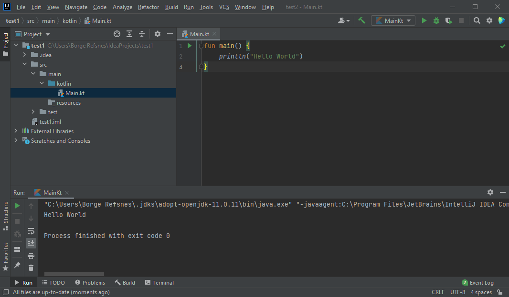

Kotlin 入门
Kotlin IDE
开始使用 Kotlin 的最简单方法是使用 IDE。
IDE（集成开发环境）用于编辑和编译代码。
在本章中，我们将使用 IntelliJ（由创建 Kotlin 的同一批人开发），可以从以下网址免费下载：
Kotlin 安装
一旦 IntelliJ 下载并安装完成后，点击新建项目按钮开始使用 IntelliJ：

然后单击左侧菜单中的 "Kotlin"，并为您的项目输入一个名称：

接下来，我们需要安装 JDK（Java 开发工具包）来启动和运行我们的 Kotlin 项目。单击 "Project JDK" 菜单，选择 "Download JDK" 并选择版本和供应商（例如 AdoptOpenJDK 11），然后单击 "Download" 按钮：

下载并安装 JDK 后，从选择菜单中选择它，然后单击“下一步”按钮，最后单击“完成”：

现在我们可以开始处理我们的 Kotlin 项目了。不用担心 IntelliJ 中的所有不同按钮和功能。现在，只需打开 src（源文件）文件夹，并按照下图所示的相同步骤创建一个 kotlin 文件：

选择“File”选项并为您的 Kotlin 文件添加一个名称，例如 "Main"：

您现在已经创建了第一个 Kotlin 文件 (Main.kt)。让我们向其中添加一些 Kotlin 代码，并运行程序以查看其如何工作。在 Main.kt 文件中，添加以下代码：
Main.kt
fun main() {
println("Hello World")
}

如果您不理解上面的代码，请不要担心 - 我们将在后面的章节中详细讨论。现在，让我们专注于如何运行代码。点击顶部导航栏上的“Run”按钮，然后点击 "Run"，并选择 "Mainkt"。
接下来，IntelliJ 将构建您的项目，并运行 Kotlin 文件。输出将如下所示：

如您所见，代码的输出是“Hello World”，这意味着您现在已经编写并执行了您的第一个 Kotlin 程序！
正如您所看到的，代码的输出是 "Hello World"，这意味着您现在已经编写并执行了您的第一个 Kotlin 程序！
在 W3School 学习 Kotlin
在 w3school.com.cn 学习 Kotlin 时，您可以使用我们的“亲自试一试”工具，该工具同时显示代码和结果。这将使您更容易理解我们后续要学习的每个部分：
Main.kt
Code:
fun main() {
println("Hello World")
}
结果：
Hello World